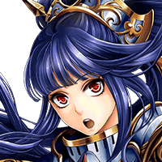
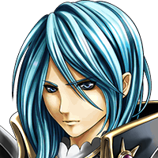

クレア
一歩間違えば、我々が全滅していた。 恐ろしい相手だったわ……。
クルト
でも、これでグランガイアへの危機は 取り除かれたんだね……。
ファダル
クェイドたちは、カルナ・マスタ様のもとへ もう辿り着いただろうか……。
クレア
大丈夫、きっと辿り着けているわ……。 ディアナも一緒なんだしね。
ファダル
しばらくしたら、 今後、俺たちが取るべき行動を考えよう。
ファダル
カルナ・マスタ様の任務を終えたんだ。 使いの方から何か連絡があると思うんだが。
？？？
所詮は魔神か。 人ごときに敗れるとはな……。


クレア
！！
？？？
戦力を分散させたところまでは 計画通りだったのだが、
？？？
貴様がグランガイアに戻っていたのなら 私が直接動く必要もなかったのだが、
？？？
あの風樹の神剣の使い手の行動は 不確定要素が多い。
？？？
万が一の状況になる前に 貴様たちだけでも片付けておこう。
？？？
…………。 いいだろう。せめてもの慈悲だ。

メロード
我が名はメロード。
メロード
カルナ・マスタが 狙われているということもな……。
メロード
しかし、貴様らにはもう関係ないこと。 安心してその生命を我が主に捧げよ！
メロード
我が一撃で息絶えぬとは……。 しぶとさだけはさすがだということか。
ファダル
カルナ・マスタ様に敵する神が いらっしゃるということか……。
クレア
その神にとって私たちメイリスは 邪魔な存在ということ？
ファダル
だが、カルナ・マスタ様が 本当に狙われているのなら、
ファダル
クェイドたちを向かわせることができて よかったとしよう。
クレア
私も……最後に彼女と 話しておけてよかった……。
クルト
姉さん！ ファダルさん！ 何であきらめたようなことを！
メロード
今、自分たちに残された道が 死しかないということがな。
メロード
じきに貴様らの仲間たちも 貴様らと同じ場所に行くことになるだろう。
メロード
滅びよ！ 愚神に仕えし愚かな人間たちよ！
クェイド
ファダル、クレア、クルト 間に合ったようだな。
ファダル
カルナ・マスタ様のもとへ 行ったんじゃなかったのか！？
クェイド
俺が大切なのは神の言葉より メイリスの仲間だってことをな。
ディアナ
クェイド、話しは後よ！ まずはこいつを倒さないと！
イヴリス
３人ともがんばりましたね！ 私たちが来たからもう安心ですよ！
イヴリス
どうです、クルトくん？ 私に会えて元気が出ましたか？
クルト
ああ、回復魔法のおかげでな。 これでなんとか戦えそうだ。
イヴリス
そこは、私に会えて元気が出たって 言ってくれないとー！
ディアナ
フフッ、でもごめんなさい、クレア。 約束、破っちゃった。
クレア
もし私がその場にいても、お前と同じように あいつも止められなかったと思うからな。
メロード
少しばかり面倒になったが それでも我が敵ではない。
クェイド
グッ、さすが神の使い……。 並の強さではないか……。
メロード
だが、人間同士を潰し合わせる我が策を 邪魔した罪は償ってもらうとしよう。
ディアナ
気にしてはダメよ。 こいつが何を考えていようと関係ないわ。
ディアナ
私たちがやらなければならないのは、 こいつを倒してグランガイアに戻ること。
ファダル
神の使いに背くことに罪悪感はあるが この状況なら仕方あるまい。
メロード
偉大なる神への信奉を捨てた貴様らには もはや何の価値もない！
クェイド
使者様…… いや、メロードとか言ったな。
クェイド
いくら俺たちが神衛使だからって、 俺たちも考え、生きているんだ。
クェイド
俺は相手が誰であろうと このメイリスという場所と仲間を必ず守る！
ディアナ
ええ、そうね。 私はみんなともっと話したい。
クレア
私も同感だわ。 納得できない死など受け入れられないわ。
クルト
ボクは姉さんと一緒に生きる。 ただそれだけだ。
イヴリス
せっかく、自由の意味が少しわかって きたんですから♪
ファダル
神がご命じになるなら いつでも捨てる覚悟はあった。
ファダル
だが、それを邪魔するヤツが側に多くてね。
メロード
秩序を守りし偉大なる神に仕えし我の力を その身をもって知るがいい！
クェイド
みんな、絶対にこの戦いに勝って グランガイアに生きて戻るんだ！